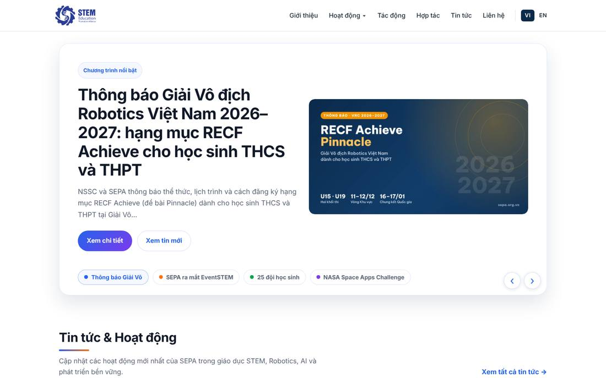
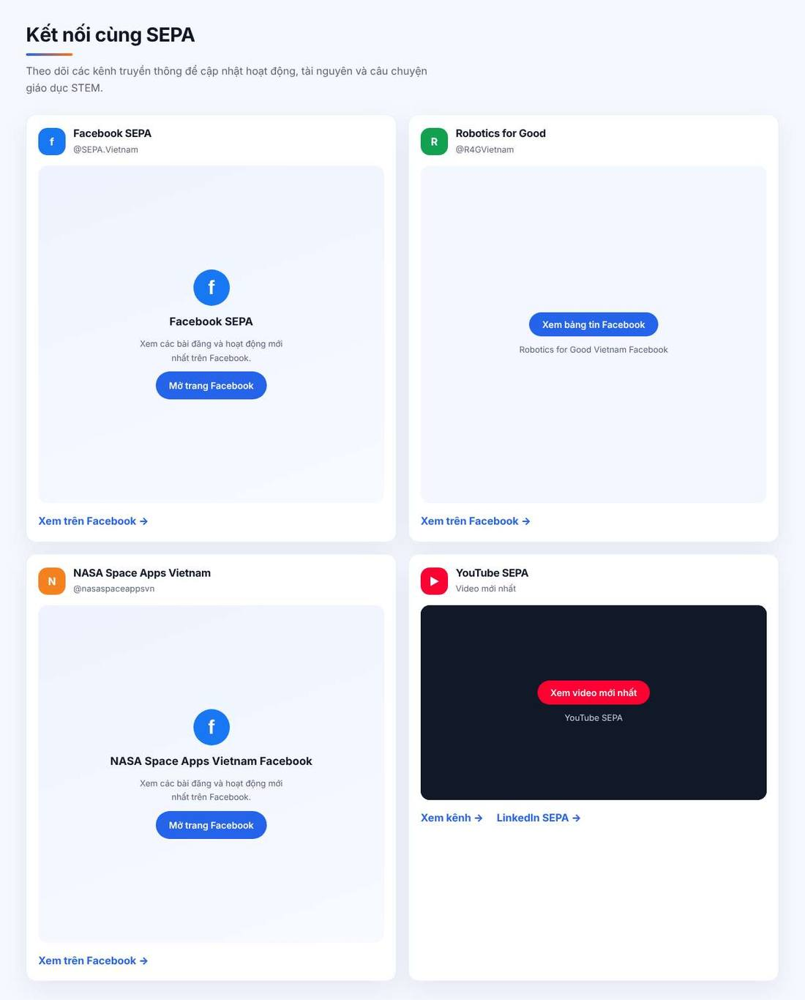
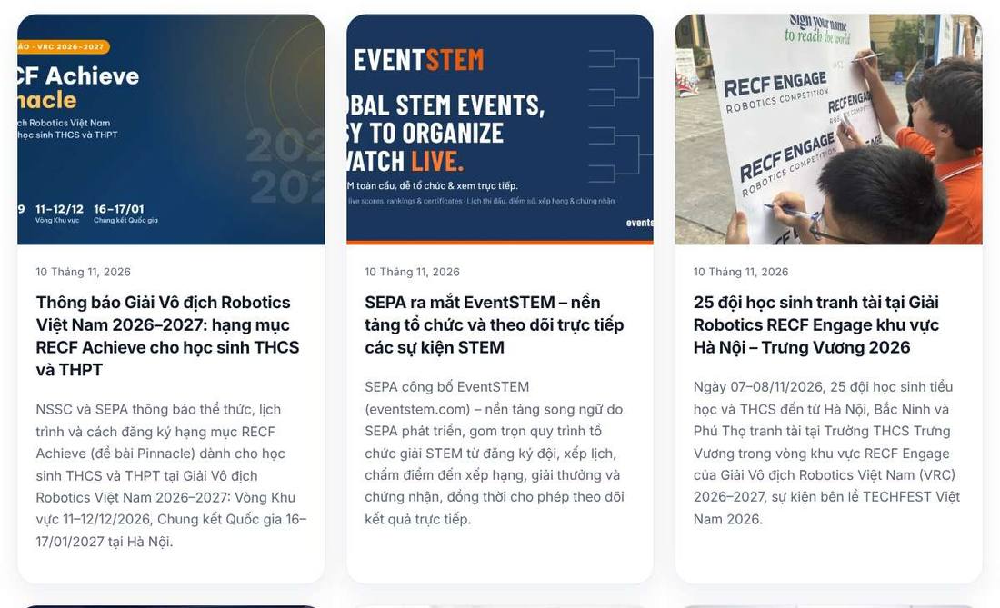
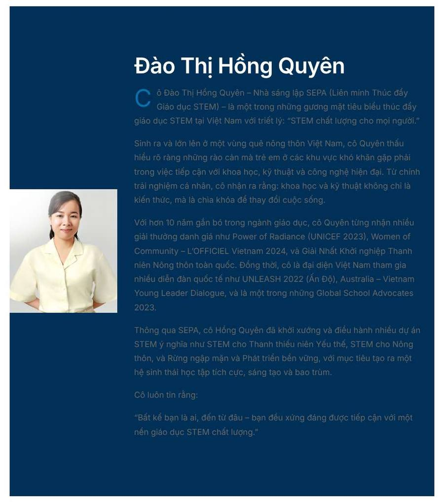

Về kỹ thuật, website chạy ổn: nhanh, không lỗi, có song ngữ. Vấn đề nằm ở chỗ khác. Người mới vào trang chủ chỉ thấy một bảng tin. Họ không biết SEPA là ai, đã làm được gì, có những đối tác lớn nào. Những điều làm nên tầm vóc SEPA như 400.000 học sinh, vinh danh cấp Chính phủ, đối tác RECF, ITU, NIC, NSSC đều nằm sâu ở trang con, viết thành đoạn văn dài, gần như không có hình ảnh và logo.
Logo nhỏ, không có chữ “SEPA”. Màn hình đầu là một tin thông báo, không nói SEPA là ai.
Số liệu tác động, giải thưởng, đối tác có đủ nhưng bị giấu ở trang con và viết dạng văn bản.
Sạch sẽ nhưng giống mẫu chung. Ít ảnh thật, nhiều chữ, màu sắc không thống nhất giữa các khu vực.
Không vỡ bố cục, nhưng trang rất dài (Hợp tác ~11.900px) và nhiều nút bấm nhỏ hơn 24px.
TTFB 0,3–1 giây nhờ LiteSpeed Cache. Có 2 trang nhúng ảnh base64 nặng 1–3MB.
Không có canonical, không có dữ liệu cấu trúc. 43/198 trang có nhiều hơn 1 thẻ H1. 160 ảnh thiếu alt.
Đã có plugin WCAG. Còn trang chữ xám trên nền xanh đậm gần như không đọc được.
Lộ danh sách tài khoản, thiếu header bảo mật, 17 plugin không dùng vẫn chưa gỡ.
Điểm do người rà soát đánh giá dựa trên bằng chứng bên dưới, không phải điểm từ công cụ tự động.
Đây là khoảng cách lớn nhất. Hồ sơ năng lực cho thấy SEPA ở tầm quốc gia và quốc tế, còn website hiện tại để khách tự đi tìm điều đó.
| Điểm mạnh trong Hồ sơ | Trên website hiện tại | Mức độ |
|---|---|---|
| 400.000+ học sinh, 12.000+ giáo viên, 75% dân tộc thiểu số, 60% nữ | Có ở Giới thiệu và Tác động. Không có trên trang chủ. | Thiếu ở trang chủ |
| Phó Thủ tướng vinh danh tại NIC 2025, Top 9 SAM RATULANGI, giải UNESCO, đề cử UNICEF | Nằm ở cuối trang Tác động (~vị trí 5.000px), dạng danh sách chữ, không có ảnh hay huy hiệu. | Bị chôn |
| Đối tác RECF, ITU – Liên Hợp Quốc, British Science Association, NIC, NSSC, Ford, Samsung (MSF) | Chỉ có tên dạng chữ. Không có logo đối tác nào trên toàn website. | Thiếu |
| Robotics for Good: 2 đội Việt Nam đạt giải Nhì toàn cầu tại Geneva | Một tin tức ngày 05/07/2026. Trang Hợp tác có nhắc nhưng không được đưa lên làm điểm nhấn. | Yếu |
| NASA Space Apps Ninh Bình 2025: hạng 42/400+ thế giới, thứ 2 Đông Nam Á | Có ở Tác động và Hợp tác, dạng ô số nhỏ. | Yếu |
| Hợp tác chiến lược với Taleem (Ả Rập Xê Út), THCS Trưng Vương 2026–2029 | Taleem chỉ là một ô chữ ở trang Hợp tác. | Yếu |
| Davilearn, 2.000 mô phỏng miễn phí | Một dòng ở trang Hoạt động. | Yếu |
| Hoạt động tại 19 tỉnh thành (Hồ sơ) | Website ghi 23 tỉnh thành ở Giới thiệu, Hoạt động, Tác động. | Mâu thuẫn số liệu |
| Sứ mệnh “Giáo dục STEM chất lượng cho mọi trẻ em” | Chỉ có ở thẻ tiêu đề trình duyệt và chân trang. | Yếu |
Phần đầu trang chủ là một slider gồm 4 tin tức. Người lần đầu vào trang, như nhà tài trợ, đối tác quốc tế hay Sở Giáo dục, chỉ thấy “Thông báo Giải Vô địch Robotics…”. Không có câu sứ mệnh, không có ảnh học sinh, không có con số. Logo trên đầu trang hiển thị “STEM Education” rất nhỏ, chữ SEPA không xuất hiện ở đâu trong phần này.

Khu “Kết nối cùng SEPA” có 4 khung Facebook/YouTube. Để trang nhẹ, các khung này chỉ nạp nội dung khi người xem bấm vào. Kết quả là ai mới vào cũng thấy 4 ô xám lớn, trông như website bị lỗi. Phần này cao khoảng 1.500px trên tổng 3.900px của trang chủ.

Nhiều ảnh đại diện là poster thiết kế sẵn có chữ, kích thước 1200×630. Khi bị cắt vào khung thẻ, chữ mất đầu mất đuôi, ví dụ “CF Achieve / nacle”, “BAL STEM EVENTS”. Có bài dùng ảnh tạm chỉ ghi chữ “SEPA”. Trang Tin tức cũng không có bộ lọc theo chương trình (Robotics, NASA, CREST…).

Các trang Giới thiệu, Hoạt động, Tác động, Hợp tác có nội dung tốt và đầy đủ. Nhưng mỗi trang dài 4.200–6.800px trên máy tính (8.500–11.900px trên điện thoại) mà chỉ có 3–6 ảnh, chủ yếu là các khối chữ nhỏ màu xám. SEPA làm việc với học sinh vùng cao, nữ sinh mặc trang phục dân tộc, robot, drone. Đó là chất liệu hình ảnh rất mạnh mà website gần như chưa khai thác.
Website có 52 trang tiếng Việt và 22 trang tiếng Anh. Phần lớn trang cũ chưa được làm lại theo giao diện mới. Ví dụ trang /sang-lap: chữ xám đậm trên nền xanh navy, độ tương phản quá thấp. Đây lại là trang giới thiệu Nhà sáng lập.

Các trang trùng hoặc lỗi thời:
/sang-lap và /gioi-thieu/doi-ngu-sang-lap/sang-lap-va-dieu-hanh/lang-chanh và /lang-chanh-thanh-hoa/dai-su-stem-hoc-sinh-2 và /dai-su-stem-hoc-sinh-2/dai-su-stem-2/hoithaostemnu và /stem-cho-phai-nu/thu-thach-nasa-2025, /cuoc-thi-co-hoi: cần kiểm tra còn dùng hay không/robotics-summer-camp-2026: HTML nặng hơn 1MB vì nhúng 14 ảnh base64, tải quá 60 giây trong lần kiểm tra. Bản tiếng Anh nặng 3MB.canonical và không có dữ liệu cấu trúc Organization. Google khó hiểu SEPA là một tổ chức, có logo, có trang Facebook chính thức./wp-json/wp/v2/users và wp-sitemap-users-1.xml công khai 5 tài khoản, trong đó có tài khoản quản trị. Kẻ xấu biết sẵn tên đăng nhập để dò mật khẩu.x-powered-by.Mỗi khối trả lời một câu hỏi của nhà tài trợ hoặc đối tác. Nội dung đã có sẵn trong Hồ sơ năng lực.
xeap (ví dụ Astro), dùng WordPress làm nơi nhập tin. Nhanh và an toàn hơn, nhưng cần người kỹ thuật duy trì.